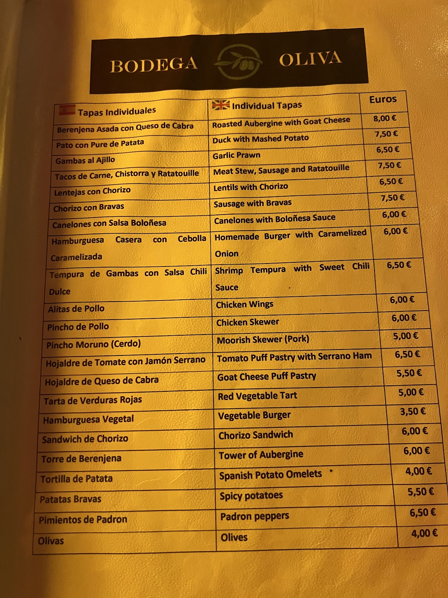

Bodega Oliva es de esas paradas obligadas: barra concurrida, vermut casero servido con su hielo y su naranja, y una energía que solo tienen los sitios auténticos.Bodega Oliva is one of those must-stops: a busy bar, house vermouth served with ice and orange, and the kind of energy only genuine places have.
Con casi 1.700 reseñas y un 4,7, aquí no hay secretos: buen producto, precios de barrio y ganas de que te sientas como en casa. Ven sin prisa.With nearly 1,700 reviews and a 4.7, there are no secrets here: good product, neighbourhood prices and a genuine welcome. Come, take your time.
